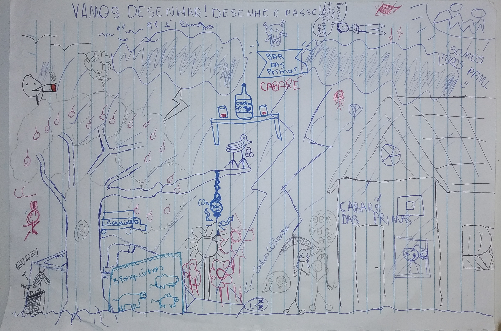
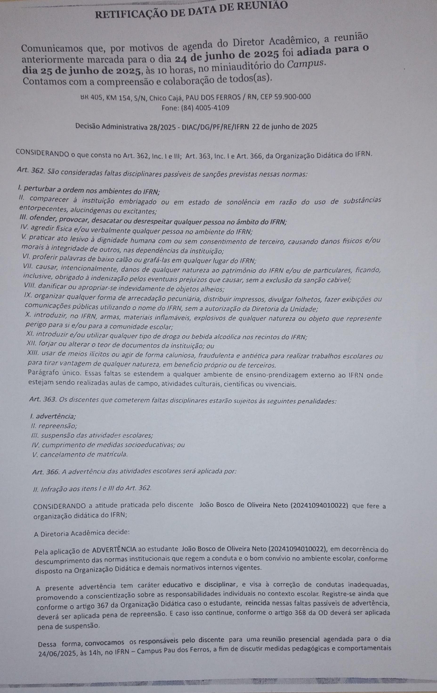
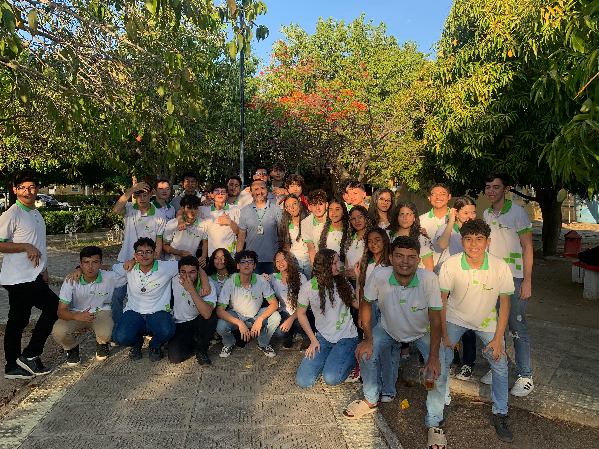
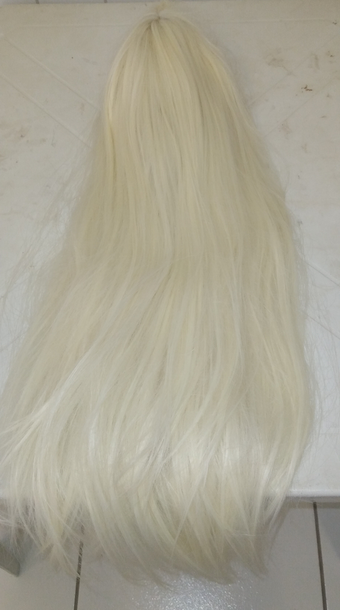
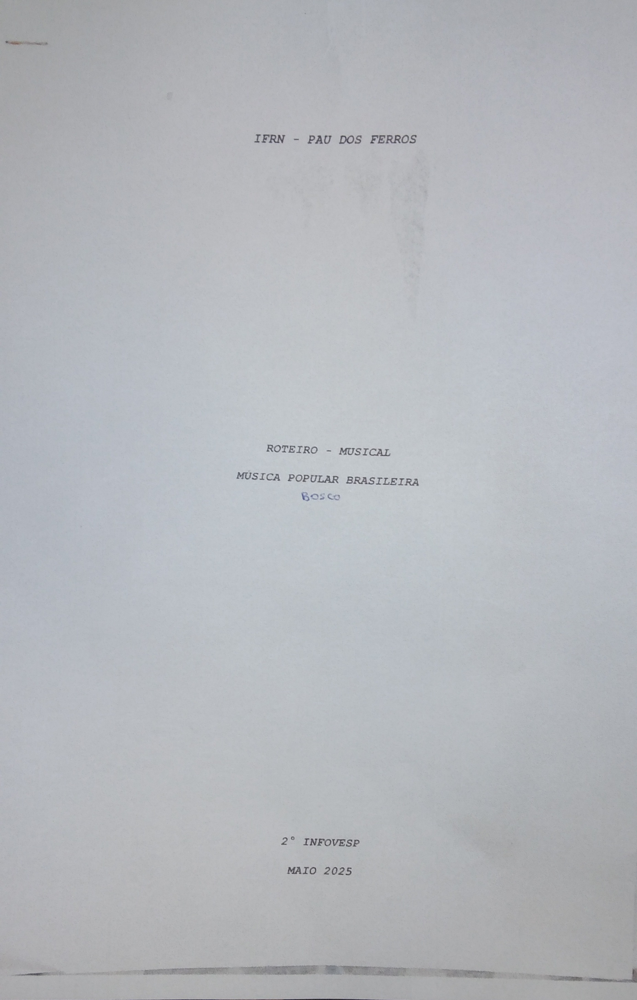
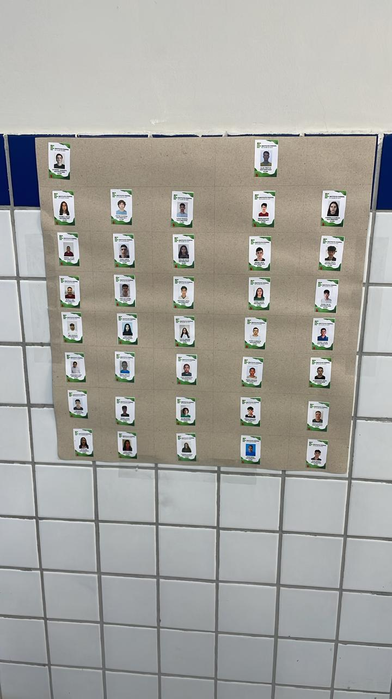
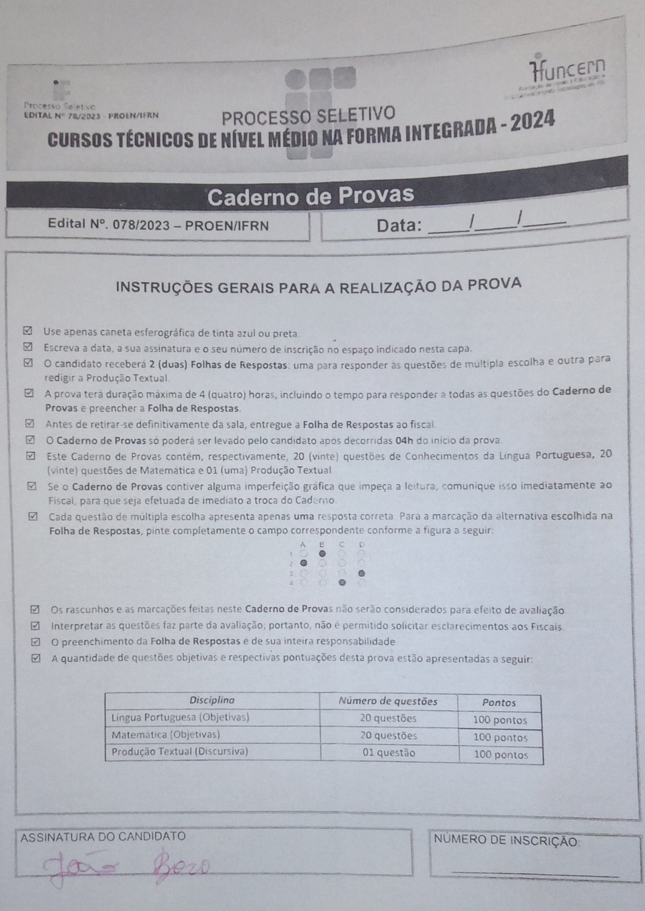

Galeria de Objetos Históricos

Folha de Desenhos da Turma Info Vesp 2024.1
Data: 2024.
Material: Papel A4 com desenhos.
Uma folha A4 preenchida com desenhos colaborativos de todos os integrantes da turma. Criada durante uma aula de geografia, onde os alunos, para combater o tédio, iniciaram uma corrente de desenhos de arte moderna, onde cada contribuição completava a anterior.

Advertência da Turma Info Vesp 2024.1
Data: 2025.
Material: Documento oficial.
Um documento de advertência atribuído a todos os integrantes da turma pela gestão do IFRN. Resultou de más condutas e interrupções frequentes durante um longo período. Apesar de ser uma péssima lembrança, motivou uma melhora comportamental geral.

Fotos da Turma Info Vesp 2024.1
Data: 2024-2026.
Material: Fotografias impressas.
Registros fotográficos de momentos especiais, alegres, descontraídos e amigáveis vividos pela turma. Eternizam experiências em viagens e comemorações, relembrando emoções e memórias marcantes.

Peruca Loira de Performance
Data: 2025.
Material: Fibra sintética.
Uma peruca loira feminina usada no evento de dança. O aluno Alan Victor a utilizou ao lado de Bruno Alexandre para interpretar a icônica dança do filme "As Branquelas", durante a tradicional apresentação do professor João Lucas.

Roteiro do Primeiro Musical e Caixa Cênica
Data: 2024 (Roteiro), 2025 (Caixa).
Material: Papel impresso e caixa de armazenamento.
Roteiro do musical de Natal, composto por João Bosco e Tamires Graziele, sob direção da professora Letícia Jácome. A caixinha foi achada e usada para armazenar cartas, completando a cena com excelência.

>Despedidas de Professores
Data: 2024-2026.
Material: Fotografias.
Fotos registram a tradição de homenagear despedidas de professores marcantes.

Mapa de Sala
Data: 2025.
Material: Documento impresso.
O mapa de sala, instituído após a advertência para amenizar o caos, tornou-se desnecessário rapidamente.

Prova do IF
Data: 2023.
Material: Documento impresso.
A prova de admissão de 2023 foi o início de tudo, onde os alunos foram aprovados no IFRN Campus Pau Dos Ferros.